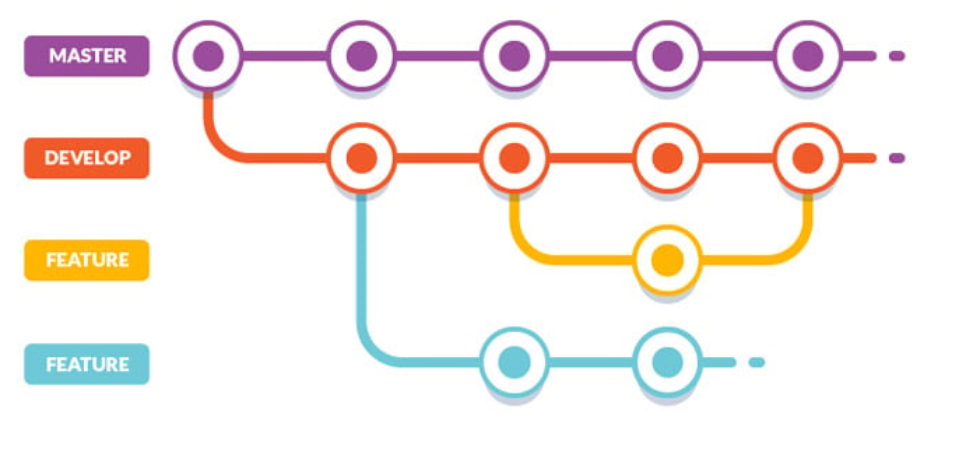
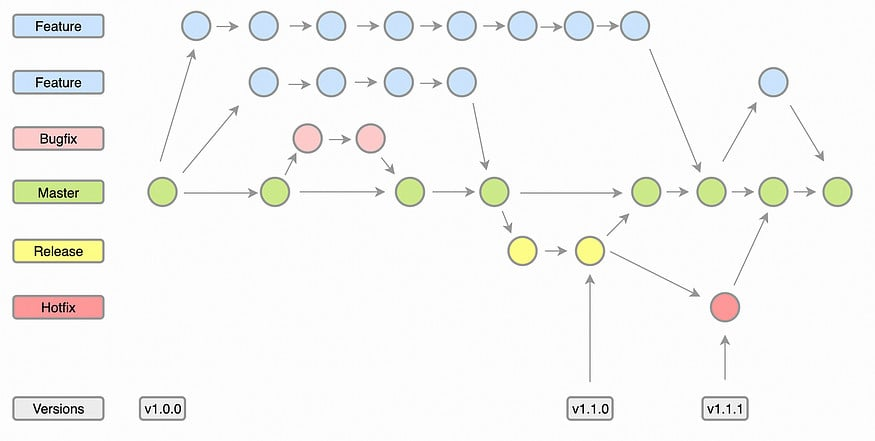
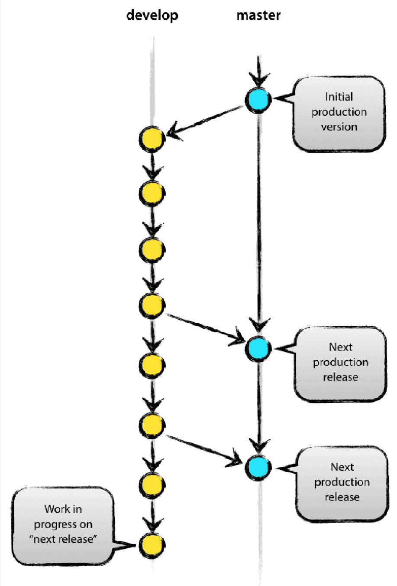
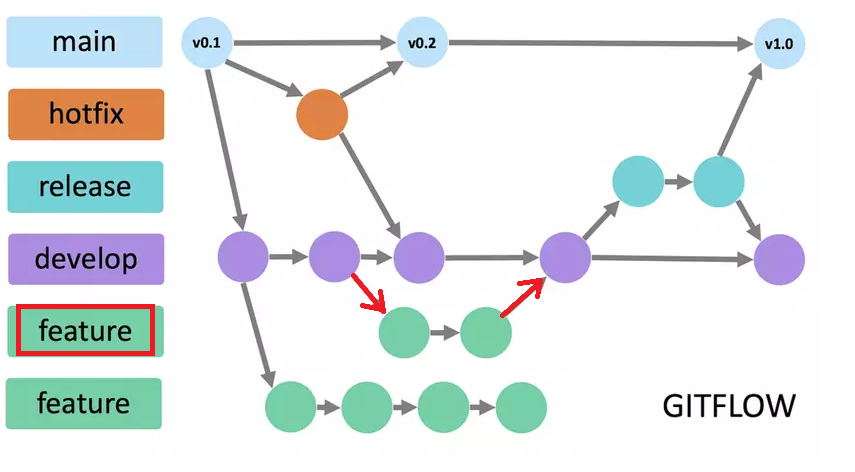
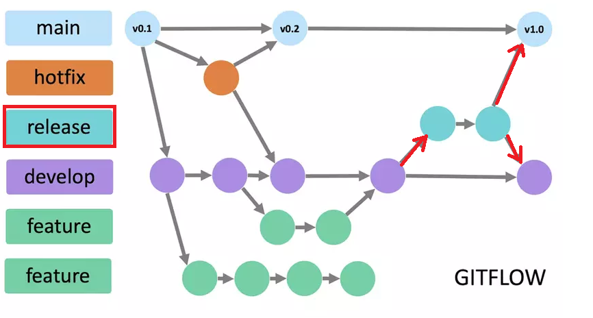
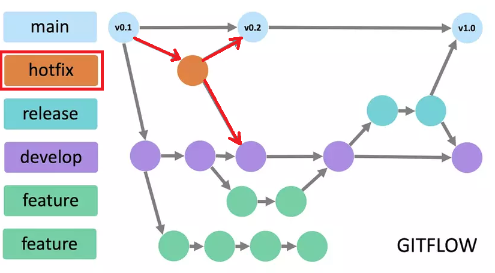
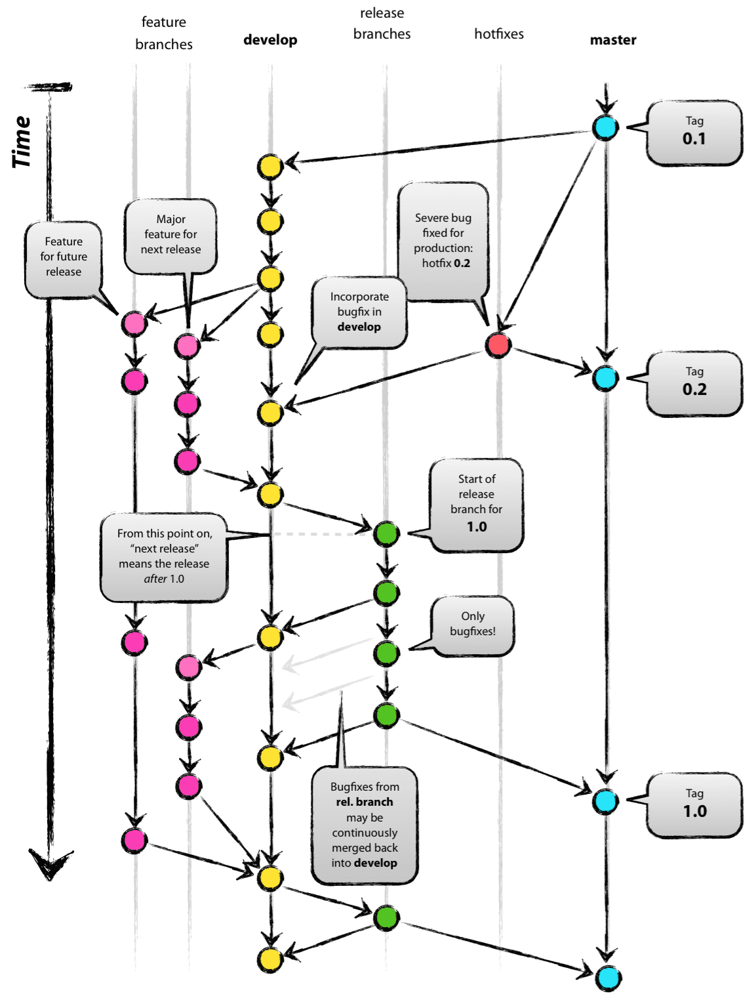
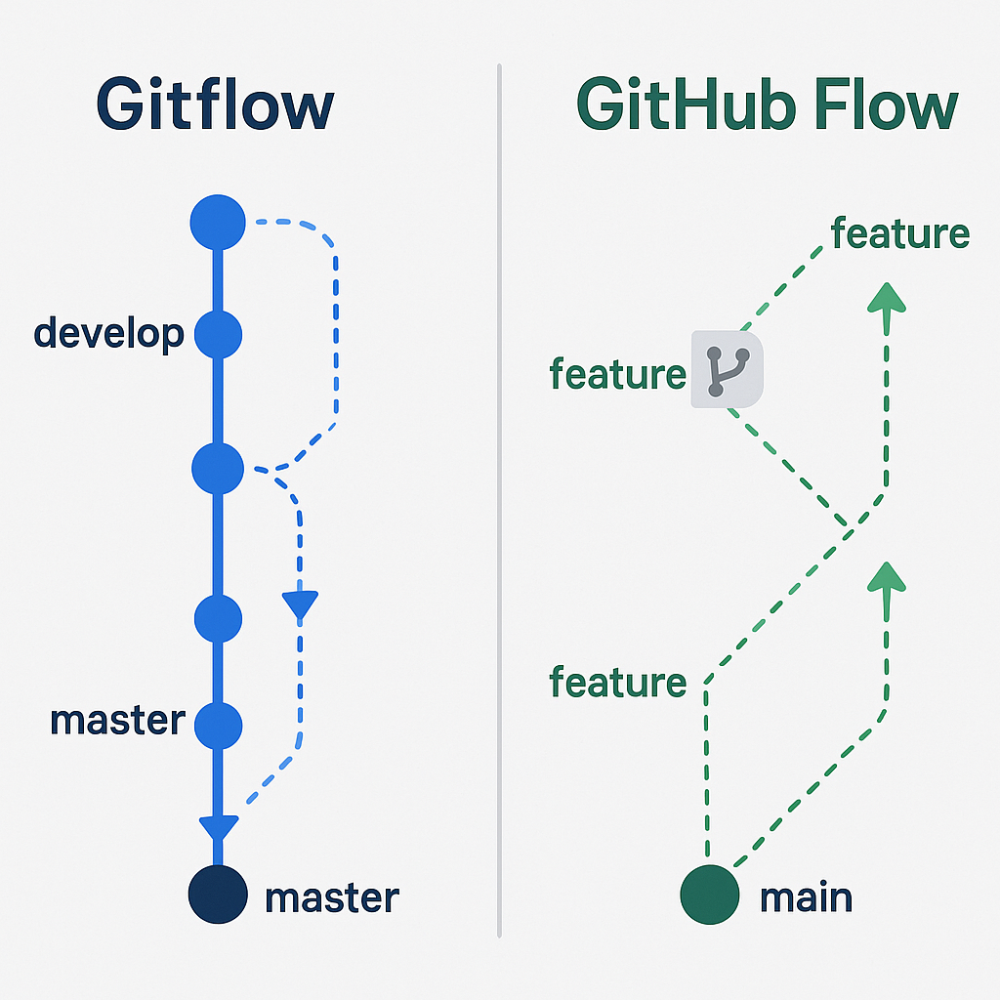

GitFlow: Quy Trình Quản Lý Mã Nguồn Hiệu Quả Cho Dự Án Phần Mềm
Mở đầu
Trong thế giới phát triển phần mềm hiện đại, Git đã trở thành công cụ quản lý mã nguồn không thể thiếu. Tuy nhiên, việc chỉ sử dụng Git là chưa đủ - để làm việc nhóm hiệu quả, tránh xung đột mã nguồn và duy trì chất lượng dự án, chúng ta cần một quy trình làm việc rõ ràng.
GitFlow là một trong những workflow nổi tiếng nhất, được giới thiệu bởi Vincent Driessen vào năm 2010. Nó cung cấp một mô hình phân nhánh có cấu trúc chặt chẽ, giúp các đội phát triển quản lý mã nguồn một cách có tổ chức và hiệu quả.
"GitFlow không chỉ là một quy trình - đó là một tư duy về cách tổ chức công việc phát triển phần mềm một cách có hệ thống."

Bài viết này sẽ hướng dẫn bạn từ khái niệm cơ bản đến thực hành GitFlow, kèm theo ví dụ minh họa và so sánh với các workflow khác.
Phần 1: Kiến Thức Cơ Bản
1.1 Git Workflow là gì?
Git Workflow là một quy trình làm việc hoặc phương pháp tổ chức việc sử dụng Git trong quản lý mã nguồn. Nó bao gồm các quy định về:
- Cách tổ chức nhánh: Quy định đặt tên, tạo và sử dụng nhánh như main, develop, feature, hotfix, release...
- Quy trình tách và hợp nhất nhánh: Ví dụ nhánh feature phải tách từ develop, mã từ develop mới được phép merge vào main
- Quy tắc cộng tác: Quy định về Pull Request, code review trước khi merge...
1.2 Tại sao cần Git Workflow?
Vấn đề khi không có quy trình rõ ràng
Khi làm việc nhóm mà không có workflow, các vấn đề thường gặp phải:
- Xung đột mã nguồn (Merge Conflicts): Nhiều người cùng modify code ở cùng file
- Mất kiểm soát phiên bản: Không biết code nào đang ở production, code nào đang phát triển
- Khó khăn trong việc rollback: Khi có bug ở production, khó xác định version nào để rollback
- Thiếu quy trình review: Code được merge mà không có người kiểm tra chất lượng
Giải pháp từ Git Workflow

Git Workflow giúp:
- ✅ Tránh xung đột khi hợp nhất
- ✅ Giữ mã nguồn production luôn sạch sẽ
- ✅ Cộng tác suôn sẻ với các thành viên trong nhóm
- ✅ Theo dõi và review thay đổi hiệu quả
1.3 GitFlow là gì?
GitFlow là một mô hình phân nhánh Git được thiết kế đặc biệt cho các dự án có chu kỳ phát hành định kỳ. Mô hình này sử dụng các nhánh tính năng (feature branch) và nhiều nhánh chính (primary branch) với vai trò cụ thể.
Lịch sử ngắn gọn:
- 2010: Vincent Driessen giới thiệu GitFlow trong bài viết "A successful Git branching model"
- 2010-2020: GitFlow trở thành standard cho nhiều enterprise projects
- 2020-nay: Vincent Driessen lưu ý GitFlow có thể không phù hợp cho continuous delivery, khuyến dùng GitHub Flow cho các dự án web app
Phần 2: Cấu Trúc Chi Tiết Của GitFlow
2.1 Các nhánh chính (Main Branches)
GitFlow sử dụng hai nhánh chính với vòng đời vô hạn:

2.1.1 Nhánh Master (hoặc Main)
origin/master
├── Chứa code production-ready
├── Mỗi commit là một phiên bản release
└── Được đánh tag với version numberVai trò:
- Lưu trữ lịch sử phát hành chính thức
- Luôn ở trạng thái ổn định, có thể deploy
- Mỗi lần merge vào master = một phiên bản mới
2.1.2 Nhánh Develop
origin/develop
├── Chứa code đang phát triển
├── Nơi tích hợp các feature hoàn thành
└── Dùng cho nightly buildsVai trò:
- Là nhánh tích hợp (integration branch)
- Chứa các tính năng sắp phát hành
- Nền tảng cho việc tạo feature branches
2.2 Các nhánh phụ (Supporting Branches)
Ngoài hai nhánh chính, GitFlow sử dụng các nhánh phụ với vòng đời giới hạn:
2.2.1 Feature Branches

Đặc điểm:
- Tách từ: develop
- Hợp nhất vào: develop
- Quy tắc đặt tên:
feature/hoặc bất kỳ tên nào trừ master, develop, release-*, hotfix-*
Mục đích:
- Phát triển tính năng mới
- Cô lập code để không ảnh hưởng develop
- Cho phép review code trước khi merge
Ví dụ lệnh:
# Tạo feature branch
git checkout develop
git checkout -b feature/user-authentication
# Hoàn thành feature
git checkout develop
git merge --no-ff feature/user-authentication
git branch -d feature/user-authentication
git push origin develop2.2.2 Release Branches

Đặc điểm:
- Tách từ: develop
- Hợp nhất vào: develop VÀ master
- Quy tắc đặt tên:
release-*
Mục đích:
- Chuẩn bị cho release mới
- Fix bug nhỏ trước release
- Update metadata (version number, build dates)
- Không thêm feature mới
Quy trình:
# Bắt đầu release
git checkout develop
git checkout -b release-1.2.0
# Bump version
# (Edit files to reflect new version)
# Hoàn thành release
git checkout master
git merge --no-ff release-1.2.0
git tag -a 1.2.0 -m "Release version 1.2.0"
git checkout develop
git merge --no-ff release-1.2.0
git branch -d release-1.2.02.2.3 Hotfix Branches

Đặc điểm:
- Tách từ: master
- Hợp nhất vào: develop VÀ master
- Quy tắc đặt tên:
hotfix-*
Mục đích:
- Sửa lỗi khẩn cấp ở production
- Không làm gián đoạn workflow hiện tại
- Cho phép fix nhanh mà không cần tạo release branch
Quy trình:
# Bắt đầu hotfix
git checkout master
git checkout -b hotfix-1.2.1
# Fix the bug...
git commit -m "Fix critical bug in production"
# Hoàn thành hotfix
git checkout master
git merge --no-ff hotfix-1.2.1
git tag -a 1.2.1 -m "Hotfix version 1.2.1"
git checkout develop
git merge --no-ff hotfix-1.2.1
git branch -d hotfix-1.2.12.3 Sơ đồ tổng quan GitFlow

Sơ đồ trên cho thấy:
- master: Nhánh chính cho production
- develop: Nhánh tích hợp features
- feature*: Các nhánh phát triển tính năng
- release*: Các nhánh chuẩn bị release
- hotfix*: Các nhánh sửa lỗi khẩn cấp
Phần 3: Quy Trình Chi Tiết
3.1 Workflow hoàn chỉnh
Bước 1: Khởi tạo dự án
# Clone repository
git clone <repository-url>
cd <project-name>
# Tạo develop branch
git branch develop
git push -u origin develop
# Hoặc sử dụng git-flow extension
git flow initCấu hình git-flow:
Branch name for production releases: [master]
Branch name for "next release" development: [develop]
Feature branches? [feature/]
Release branches? [release/]
Hotfix branches? [hotfix/]
Support branches? [support/]
Version tag prefix? []Bước 2: Phát triển tính năng (Feature Development)
# Bắt đầu feature
git flow feature start user-login
# Làm việc trên feature...
# Viết code, test, commit...
# Hoàn thành feature
git flow feature finish user-loginQuy trình chi tiết:
- Tách feature branch từ develop
- Phát triển tính năng độc lập
- Tạo Pull Request để review
- Merge vào develop sau khi được approve
- Xóa feature branch
Bước 3: Chuẩn bị release
# Khi develop đã đủ features cho một release
git flow release start 1.0.0
# Testing, fix bugs, bump version...
# Hoàn thành release
git flow release finish 1.0.0Các công việc trên release branch:
- Fix bug nhỏ
- Update version number
- Update changelog
- Prepare release notes
- Final testing
Bước 4: Sửa lỗi khẩn cấp (Hotfix)
# Có bug critical ở production
git flow hotfix start critical-bug-1.0.1
# Fix bug...
# Deploy fix ngay lập tức
git flow hotfix finish critical-bug-1.0.13.2 Quy tắc quan trọng
| Quy tắc | Mô tả |
|---|---|
| Quy tắc 1 | Feature branch KHÔNG BAO GIỜ merge trực tiếp vào master |
| Quy tắc 2 | Tất cả changes phải đi qua develop trước khi vào master |
| Quy tắc 3 | Hotfix branch là NHẤT nhánh được tách trực tiếp từ master |
| Quy tắc 4 | Release branch phải merge vào CẢ master VÀ develop |
| Quy tắc 5 | Luôn dùng flag --no-ff khi merge để preserve history |
Phần 4: So Sánh Với Workflow Khác
4.1 Bảng so sánh chi tiết
| Tiêu chí | Centralized | GitHub Flow | Feature Branch | Gitflow | Forking |
|---|---|---|---|---|---|
| Cấu trúc | Chỉ main | main + feature | main + develop + feature | main + develop + feature + release + hotfix | Mỗi người có kho riêng |
| Độ phức tạp | Cực kỳ đơn giản | Đơn giản | Phức tạp vừa phải | Phức tạp nhất | Phức tạp khi nhiều PR |
| Mức độ kiểm soát | Thấp | Trung bình | Cao | Rất cao | Cao |
| CI/CD | Hạn chế | Tốt | Tốt | Tốt cho dự án dài hạn | Tùy vào PR |
| Xung đột mã | Cao | Thấp | Thấp | Trung bình | Thấp |
| Chu kỳ phát hành | Không có | Không có | Cần thêm quy trình | Có chu kỳ rõ ràng | Không phù hợp |
| Phù hợp nhất | Dự án cá nhân | Dự án nhỏ, CD | Dự án vừa-lớn | Dự án lớn, có release cycle | Open source |
4.2 Khi nào nên dùng GitFlow?
Nên dùng GitFlow khi:
- ✅ Dự án có chu kỳ phát hành định kỳ (tháng, quý)
- ✅ Cần hỗ trợ nhiều phiên bản song song
- ✅ Dự án lớn với nhiều developers
- ✅ Cần quy trình chặt chẽ cho release management
- ✅ Có team riêng cho QA và release preparation
KHÔNG nên dùng GitFlow khi:
- ❌ Dự án nhỏ với 1-3 developers
- ❌ Áp dụng Continuous Delivery (deploy nhiều lần/ngày)
- ❌ Team mới làm quen với Git
- ❌ Dự án cần flexibility cao
- ❌ Web apps với continuous deployment
4.3 So sánh với GitHub Flow

| Đặc điểm | GitHub Flow | Gitflow |
|---|---|---|
| Nhánh chính | main | master + develop |
| Feature branch | Từ main | Từ develop |
| Release branch | Không có | Có |
| Hotfix branch | Từ main (feature) | Từ master (dedicated) |
| Deployment | Từ main | Từ master (tagged) |
| Versioning | Không bắt buộc | Bắt buộc (tags) |
Phần 5: Thực Hành Và Ví Dụ
5.1 Ví dụ thực tế: Dự án E-commerce
Bối cảnh
- Dự án: E-commerce website
- Team: 5 developers
- Release cycle: 2 tuần/lần
- Yêu cầu: Support multiple versions in production
Kịch bản 1: Thêm tính năng Cart
# Day 1: Developer A bắt đầu feature Cart
git flow feature start shopping-cart
# Day 1-5: Developer A làm việc trên feature
# (Commits, test, local development)
# Day 5: Hoàn thành feature
git flow feature finish shopping-cart
# Kết quả: Code được merge vào develop
# Team khác có thể thấy và reviewKịch bản 2: Chuẩn bị Release 1.2
# Day 10: Develop đủ features cho release 1.2
git flow release start 1.2.0
# Day 10-12: Team QA test trên release branch
# Fix bugs phát hiện
# Update version number
# Day 12: Deploy to production
git flow release finish 1.2.0
git push origin master
git push origin develop
git push --tagsKịch bản 3: Hotfix bug critical
# Day 15: Có bug critical ở production 1.2.0
git flow hotfix start payment-crash-1.2.1
# Fix ngay lập tức
# Test locally
# Deploy to staging
# Hoàn thành hotfix
git flow hotfix finish payment-crash-1.2.1
# Deploy to production immediately5.2 Demo: Thiết lập GitFlow từ con số 0
Bước 1: Cài đặt git-flow
Mac:
brew install git-flow-avhLinux (Ubuntu/Debian):
sudo apt-get install git-flowWindows:
# Sử dụng Git for Windows hoặc WSL
# git-flow thường đã được tích hợpBước 2: Khởi tạo dự án mới
# Tạo repository mới
mkdir my-project
cd my-project
git init
# Commit khởi tạo
echo "# My Project" > README.md
git add README.md
git commit -m "Initial commit"
# Khởi tạo git-flow
git flow init
# Cấu hình như hướng dẫn ở phần 3.1Bước 3: Tạo feature đầu tiên
# Bắt đầu feature
git flow feature start hello-world
# Sửa code
echo "console.log('Hello World!');" > app.js
git add app.js
git commit -m "Add hello world functionality"
# Hoàn thành feature
git flow feature finish hello-world
# Kết quả: Code đã ở develop5.3 Git Flow AVH Extension
Git Flow AVH là bộ mở rộng Git giúp làm việc với GitFlow dễ dàng hơn:
| Lệnh | Mô tả |
|---|---|
git flow init |
Khởi tạo git-flow |
git flow feature start NAME |
Bắt đầu feature |
git flow feature finish NAME |
Hoàn thành feature |
git flow release start VERSION |
Bắt đầu release |
git flow release finish VERSION |
Hoàn thành release |
git flow hotfix start VERSION |
Bắt đầu hotfix |
git flow hotfix finish VERSION |
Hoàn thành hotfix |
Phần 6: Kiến Thức Mở Rộng
6.1 Lưu ý quan trọng từ Vincent Driessen (2020)
"This model was conceived in 2010, now more than 10 years ago... If your team is doing continuous delivery of software, I would suggest to adopt a much simpler workflow (like GitHub Flow) instead of trying to shoehorn git-flow into your team."
Khi nào nên THẬN TRỌNG với GitFlow:
- Dự án web apps với continuous delivery
- Deploy nhiều lần/ngày
- Không cần support multiple versions
- Team nhỏ cần flexibility
6.2 Best Practices
6.2.1 Quy tắc đặt tên nhánh
# Tốt ✅
feature/user-authentication
feature/payment-gateway
release/v1.2.0
hotfix/critical-bug-login
# Tránh ❌
feature1
login-fix
release-16.2.2 Commit message
# Tốt ✅
feat: add user authentication
fix: resolve payment gateway timeout
docs: update API documentation
# Tránh ❌
update
fix bug
done6.2.3 Chiến lược Merge
# Luôn dùng --no-ff để preserve history
git merge --no-ff feature/new-feature
# Điều này giữ được context của feature branch
# Giảm merge conflicts về sau6.3 Tích hợp CI/CD
GitFlow với CI/CD Pipeline:
# .gitlab-ci.yml example
stages:
- build
- test
- deploy
# Build on every branch
build:
stage: build
script:
- npm install
- npm run build
only:
- branches
# Test on develop and feature branches
test:
stage: test
script:
- npm run test
only:
- develop
- /^feature\/.*$/
# Deploy to staging from release branches
deploy_staging:
stage: deploy
script:
- deploy-to-staging.sh
only:
- /^release\/.*$/
# Deploy to production from master
deploy_production:
stage: deploy
script:
- deploy-to-prod.sh
only:
- master
when: manual6.4 GitFlow vs Modern Practices
| Traditional GitFlow | Modern GitFlow |
|---|---|
| Release branch dài ngày | Release branch ngắn (hours) |
| Manual deployment | Automated CI/CD |
| Long-lived feature branches | Short-lived feature branches |
| Tag manually | Tag automatically |
Phần 7: Ưu Điểm Và Nhược Điểm
7.1 Ưu điểm của GitFlow
1. Cấu trúc rõ ràng
- Mỗi nhánh có mục đích rõ ràng
- Dễ hiểu cho team members mới
- Quy trình chuẩn hóa cho toàn team
2. Hỗ trợ release management
- Chuẩn bị release một cách có tổ chức
- Có môi trường staging riêng (release branch)
- Dễ dàng rollback khi cần
3. Code quality assurance
- Pull request cho tất cả features
- Code review trước khi merge
- Tách biệt giữa development và production
4. Parallel development
- Multiple features có thể phát triển song song
- Không chặn nhau
- Hotfix không làm gián đoạn feature development
7.2 Nhược điểm của GitFlow
1. Độ phức tạp cao
- Nhiều nhánh cần quản lý
- Quy trình merge phức tạp
- Cần thời gian để làm quen
2. Merge conflicts tiềm ẩn
- Long-lived branches dễ gây conflicts
- Feature branches diverge từ develop
- Cần effort để resolve
3. Không phù hợp continuous delivery
- Release cycle dài
- Không tối ưu cho deploy nhiều lần/ngày
- Overkill cho small projects
7.3 Khi nào KHÔNG nên dùng
Dùng GitHub Flow hoặc Feature Branch Workflow thay thế khi:
- Startup với rapid iteration
- Web apps với continuous deployment
- Team nhỏ (< 5 developers)
- Dự án đơn giản
Phần 8: Hướng Dẫn Áp Dụng
8.1 Bước 1: Đánh giá dự án
Trước khi áp dụng GitFlow, trả lời các câu hỏi:
- Quy mô team: Bao nhiêu developers?
- Release cycle: Release bao lâu/lần?
- Project type: Web app, mobile, hay desktop?
- Team experience: Team có kinh nghiệm với Git không?
- CI/CD requirement: Cần automation mức nào?
8.2 Bước 2: Đào tạo team
## Training Plan
### Week 1: Git Basics
- git clone, pull, push
- git branch, checkout
- git merge, rebase
- Resolve conflicts
### Week 2: GitFlow Concepts
- Main branches (master, develop)
- Supporting branches (feature, release, hotfix)
- Workflow diagram
- Naming conventions
### Week 3: Hands-on Practice
- Create feature branch
- Make pull request
- Review and merge
- Create release
- Handle hotfix
### Week 4: CI/CD Integration
- Setup pipeline
- Automate testing
- Automate deployment
- Monitor and fix issues8.3 Bước 3: Thiết lập tools
Các công cụ hỗ trợ:
| Công cụ | Mô tả |
|---|---|
| Git Flow AVH | CLI extension cho git-flow |
| SourceTree | GUI hỗ trợ git-flow visualization |
| GitKraken | Git client với git-flow support |
| GitHub/GitLab/Bitbucket | Pull request và code review |
8.4 Bước 4: Tài liệu hóa
## Team GitFlow Guidelines
### Branch Naming
- feature: `feature/<jira-ticket>-short-description`
- release: `release/vX.Y.Z`
- hotfix: `hotfix/<jira-ticket>-critical-description`
### Commit Format
- feat: new feature
- fix: bug fix
- docs: documentation
- style: formatting
- refactor: refactoring
- test: adding tests
- chore: maintenance
### Pull Request Template
## Description
[What this PR does]
## Type of Change
- [ ] Bug fix
- [ ] New feature
- [ ] Breaking change
## Testing
[How to test]
## Checklist
- [ ] Code follows style guide
- [ ] Self-reviewed
- [ ] Commented complex code
- [ ] Documentation updated
- [ ] No new warnings
- [ ] Added tests
- [ ] All tests passKết Luận
Ba điểm cốt lõi cần nhớ
1. GitFlow là một công cụ, không phải đích đến
- Chọn workflow dựa trên nhu cầu dự án
- Không áp dụng machine-like
- Linh hoạt khi cần thiết
2. Cấu trúc nhánh rõ ràng = Team hiệu quả
- Mỗi branch có mục đích
- Quy trình merge có tổ chức
- Code quality được đảm bảo
3. Hiểu khi nào KHÔNG nên dùng GitFlow
- Continuous delivery → GitHub Flow
- Small team → Feature Branch Workflow
- Open source → Forking Workflow
Tương lai của Git Workflows
Xu hướng hiện tại đang chuyển dịch:
- Trunk-Based Development: Mọi người work on main
- Continuous Integration: Merge sớm, merge thường xuyên
- Automated Testing: Quality gates tự động
- Progressive Delivery: Feature flags, canary releases
Tuy nhiên, GitFlow vẫn có giá trị cho:
- Enterprise projects
- Scheduled releases
- Versioned software
- Multi-version support
Lời kết
GitFlow là một workflow đã được chứng minh qua hơn 10 năm sử dụng. Nó không phải là giải pháp cho mọi dự án, nhưng cho những dự án phù hợp, GitFlow cung cấp một framework có cấu trúc để quản lý phát hành, đảm bảo chất lượng, và hỗ trợ team làm việc hiệu quả.
"Choose the right tool for the job. GitFlow is a powerful tool when used appropriately."
Tài Liệu Tham Khảo
- Vincent Driessen - "A successful Git branching model" - Link
- Atlassian Git Tutorials - "Gitflow Workflow" - Link
- TopDev Vietnam - "Gitflow là gì?" - Link
- ITviec - "Git Workflow: Cách áp dụng kỹ thuật quản lý mã nguồn hiệu quả" - Link
- Git Flow AVH - GitHub Repository - Link
Phụ Lục
A. Git Commands Cheatsheet
# Basic Commands
git init # Khởi tạo repository
git clone <url> # Clone repository
git status # Xem trạng thái
git add <file> # Stage changes
git commit -m "message" # Commit changes
git push # Push to remote
git pull # Pull from remote
# Branching
git branch # Liệt kê branches
git branch <name> # Tạo branch mới
git checkout <branch> # Chuyển branch
git checkout -b <name> # Tạo và chuyển branch
git merge <branch> # Merge branch
git branch -d <branch> # Xóa branch
# Git Flow Commands
git flow init # Khởi tạo git-flow
git flow feature start <name> # Bắt đầu feature
git flow feature finish <name> # Hoàn thành feature
git flow release start <version> # Bắt đầu release
git flow release finish <version> # Hoàn thành release
git flow hotfix start <version> # Bắt đầu hotfix
git flow hotfix finish <version> # Hoàn thành hotfixB. Workflow Decision Tree
Bắt đầu
│
├─ Team size < 5?
│ ├─ Yes → GitHub Flow hoặc Feature Branch
│ └─ No → Tiếp tục
│
├─ Continuous Delivery?
│ ├─ Yes → GitHub Flow
│ └─ No → Tiếp tục
│
├─ Scheduled Releases?
│ ├─ Yes → GitFlow
│ └─ No → Feature Branch
│
└─ Multiple Versions?
├─ Yes → GitFlow
└─ No → Feature Branch hoặc GitHub FlowC. Common Issues & Solutions
| Vấn đề | Giải pháp |
|---|---|
| Merge conflicts | Dùng git mergetool, communicate với team |
| Lost commits | Dùng git reflog, avoid force push |
| Long-lived branches | Rebase often, keep branches short |
| Complex history | Dùng --no-ff flag, document decisions |
Tác Giả
Nguyễn Ngọc Phúc và Đàm Lê Tuấn Anh